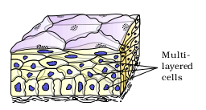
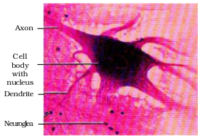
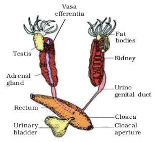
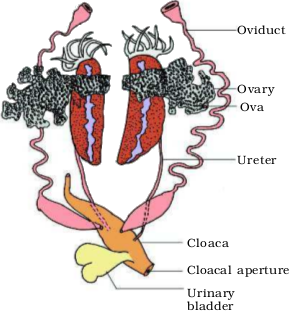

Chapter 7
Structural Organisation in Animals
7.1 Animal Tissues
7.2 Organ and Organ System
7.3 Earthworm
7.4 Cockroach
7.5 Frogs
In the preceding chapters you came across a large variety of organisms, both unicellular and multicellular, of the animal kingdom. In unicellular organisms, all functions like digestion, respiration and reproduction are performed by a single cell. In the complex body of multicellular animals the same basic functions are carried out by different groups of cells in a well organised manner. The body of a simple organism like Hydra is made of different types of cells and the number of cells in each type can be in thousands. The human body is composed of billions of cells to perform various functions. How do these cells in the body work together? In multicellular animals, a group of similar cells alongwith intercellular substances perform a specific function. Such an organisation is called tissue.
You may be surprised to know that all complex animals consist of only four basic types of tissues. These tissues are organised in specific proportion and pattern to form an organ like stomach, lung, heart and kidney. When two or more organs perform a common function by their physical and/or chemical interaction, they together form organ system, e.g., digestive system, respiratory system, etc. Cells, tissues, organs and organ systems split up the work in a way that exhibits division of labour and contribute to the survival of the body as a whole.
7.1 Animal Tissues
The structure of the cells vary according to their function. Therefore, the tissues are different and are broadly classified into four types : (i) Epithelial, (ii) Connective, (iii) Muscular and (iv) Neural.
7.1.1 Epithelial Tissue
We commonly refer to an epithelial tissue as epithelium (pl.: epithelia). This tissue has a free surface, which faces either a body fluid or the outside environment and thus provides a covering or a lining for some part of the body. The cells are compactly packed with little intercellular matrix. There are two types of epithelial tissues namely simple epithelium and compound epithelium. Simple epithelium is composed of a single layer of cells and functions as a lining for body cavities, ducts, and tubes. The compound epithelium consists of two or more cell layers and has protective function as it does in our skin.
On the basis of structural modification of the cells, simple epithelium is further divided into three types. These are (i) Squamous, (ii) Cuboidal, (iii) Columnar (Figure 7.1).
Figure 7.1 Simple epithelium: (a) Squamous (b) Cuboidal (c) Columnar (d) Columnar cells bearing cilia
The squamous epithelium is made of a single thin layer of flattened cells with irregular boundaries. They are found in the walls of blood vessels and air sacs of lungs and are involved in functions like forming a diffusion boundary. The cuboidal epithelium is composed of a single layer of cube-like cells. This is commonly found in ducts of glands and tubular parts of nephrons in kidneys and its main functions are secretion and absorption. The epithelium of proximal convoluted tubule (PCT) of nephron in the kidney has microvilli. The columnar epithelium is composed of a single layer of tall and slender cells. Their nuclei are located at the base. Free surface may have microvilli. They are found in the lining of stomach and intestine and help in secretion and absorption. If the columnar or cuboidal cells bear cilia on their free surface they are called ciliated epithelium (Figure 7.1d). Their function is to move particles or mucus in a specific direction over the epithelium. They are mainly present in the inner surface of hollow organs like bronchioles and fallopian tubes.
Figure 7.2 Glandular epithelium : (a) Unicellular (b) Multicellular
Some of the columnar or cuboidal cells get specialised for secretion and are called glandular epithelium (Figure 7.2). They are mainly of two types: unicellular, consisting of isolated glandular cells (goblet cells of the alimentary canal), and multicellular, consisting of cluster of cells (salivary gland). On the basis of the mode of pouring of their secretions, glands are divided into two categories namely exocrine and endocrine glands. Exocrine glands secrete mucus, saliva, earwax, oil, milk, digestive enzymes and other cell products. These products are released through ducts or tubes. In contrast, endocrine glands do not have ducts. Their products called hormones are secreted directly into the fluid bathing the gland.

Figure 7.3 Compound epithelium
Compound epithelium is made of more than one layer (multi-layered) of cells and thus has a limited role in secretion and absorption (Figure 7.3). Their main function is to provide protection against chemical and mechanical stresses. They cover the dry surface of the skin, the moist surface of buccal cavity, pharynx, inner lining of ducts of salivary glands and of pancreatic ducts.
All cells in epithelium are held together with little intercellular material. In nearly all animal tissues, specialised junctions provide both structural and functional links between its individual cells. Three types of cell junctions are found in the epithelium and other tissues. These are called as tight, adhering and gap junctions. Tight junctions help to stop substances from leaking across a tissue. Adhering junctions perform cementing to keep neighbouring cells together. Gap junctions facilitate the cells to communicate with each other by connecting the cytoplasm of adjoining cells, for rapid transfer of ions, small molecules and sometimes big molecules.
7.1.2 Connective Tissue
Connective tissues are most abundant and widely distributed in the body of complex animals. They are named connective tissues because of their special function of linking and supporting other tissues/organs of the body. They range from soft connective tissues to specialised types, which include cartilage, bone, adipose, and blood. In all connective tissues except blood, the cells secrete fibres of structural proteins called collagen or elastin. The fibres provide strength, elasticity and flexibility to the tissue. These cells also secrete modified polysaccharides, which accumulate between cells and fibres and act as matrix (ground substance). Connective tissues are classified into three types: (i) Loose connective tissue, (ii) Dense connective tissue and (iii) Specialised connective tissue.

(a) (b)
Loose connective tissue has cells and fibres loosely arranged in a semi-fluid ground substance, for example, areolar tissue present beneath the skin (Figure 7.4). Often it serves as a support framework for epithelium. It contains fibroblasts (cells that produce and secrete fibres), macrophages and mast cells. Adipose tissue is another type of loose connective tissue located mainly beneath the skin. The cells of this tissue are specialised to store fats. The excess of nutrients which are not used immediately are converted into fats and are stored in this tissue.

Figure 7.5 Dense connective tissue: (a) Dense regular (b) Dense irregular

Figure 7.6 Specialised connective tissues : (a) Cartilage (b) Bone (c) Blood
The intercellular material of cartilage is solid and pliable and resists compression. Cells of this tissue (chondrocytes) are enclosed in small cavities within the matrix secreted by them (Figure 7.6a). Most of the cartilages in vertebrate embryos are replaced by bones in adults. Cartilage is present in the tip of nose, outer ear joints, between adjacent bones of the vertebral column, limbs and hands in adults.
Bones have a hard and non-pliable ground substance rich in calcium salts and collagen fibres which give bone its strength (Figure 7.6b). It is the main tissue that provides structural frame to the body. Bones support and protect softer tissues and organs. The bone cells (osteocytes) are present in the spaces called lacunae. Limb bones, such as the long bones of the legs, serve weight-bearing functions. They also interact with skeletal muscles attached to them to bring about movements. The bone marrow in some bones is the site of production of blood cells.
Blood is a fluid connective tissue containing plasma, red blood cells (RBC), white blood cells (WBC) and platelets (Figure 7.6c). It is the main circulating fluid that helps in the transport of various substances. You will learn more about blood in Chapters 17 and 18.
7.1.3 Muscle Tissue
Each muscle is made of many long, cylindrical fibres arranged in parallel arrays. These fibres are composed of numerous fine fibrils, called myofibrils. Muscle fibres contract (shorten) in response to stimulation, then relax (lengthen) and return to their uncontracted state in a coordinated fashion. Their action moves the body to adjust to the changes in the environment and to maintain the positions of the various parts of the body. In general, muscles play an active role in all the movements of the body. Muscles are of three types, skeletal, smooth, and cardiac.

(a) (b) (c)
Figure 7.7 Muscle tissue : (a) Skeletal (striated) muscle tissue (b) Smooth muscle tissue (c) Cardiac muscle tissue
Skeletal muscle tissue is closely attached to skeletal bones. In a typical muscle such as the biceps, striated (striped) skeletal muscle fibres are bundled together in a parallel fashion (Figure 7.7a). A sheath of tough connective tissue encloses several bundles of muscle fibres (You will learn more about this in Chapter 20).
The smooth muscle fibres taper at both ends (fusiform) and do not show striations (Figure 7.7b). Cell junctions hold them together and they are bundled together in a connective tissue sheath. The wall of internal organs such as the blood vessels, stomach and intestine contains this type of muscle tissue. Smooth muscles are ‘involuntary’ as their functioning cannot be directly controlled. We usually are not able to make it contract merely by thinking about it as we can do with skeletal muscles.
Cardiac muscle tissue is a contractile tissue present only in the heart. Cell junctions fuse the plasma membranes of cardiac muscle cells and make them stick together (Figure 7.7c). Communication junctions (intercalated discs) at some fusion points allow the cells to contract as a unit, i.e., when one cell receives a signal to contract, its neighbours are also stimulated to contract.
7.1.4 Neural Tissue
Neural tissue exerts the greatest control over the body’s responsiveness to changing conditions. Neurons, the unit of neural system are excitable cells (Figure 7.8). The neuroglial cell which constitute the rest of the neural system protect and support neurons. Neuroglia make up more than one-half the volume of neural tissue in our body.

Figure 7.8 Neural tissue (Neuron with neuroglea)
When a neuron is suitably stimulated, an electrical disturbance is generated which swiftly travels along its plasma membrane. Arrival of the disturbance at the neuron’s endings, or output zone, triggers events that may cause stimulation or inhibition of adjacent neurons and other cells (You will study the details in Chapter 21).
7.2 Organ and Organ System
The basic tissues mentioned above organise to form organs which in turn associate to form organ systems in the multicellular organisms. Such an organisation is essential for more efficient and better coordinated activities of millions of cells constituting an organism. Each organ in our body is made of one or more type of tissues. For example, our heart consists of all the four types of tissues, i.e., epithelial, connective, muscular and neural. We also notice, after some careful study that the complexity in organ and organ systems displays certain discernable trend. This discernable trend is called evolutionary trend (You will study the details in class XII). You are being introduced to morphology and anatomy of three organisms at different evolutionary levels to show their organisation and functioning. Morphology refers to study of form or externally visible features. In the case of plants or microbes, the term morphology precisely means only this. In case of animals this refers to the external appearance of the organs or parts of the body. The word anatomy conventionally is used for the study of morphology of internal organs in the animals. You will learn the morphology and anatomy of earthworm, cockroach and frog representing invertebrates and vertebrates.
7.3 Earthworm
Earthworm is a reddish brown terrestrial invertebrate that inhabits the upper layer of the moist soil. During day time, they live in burrows made by boring and swallowing the soil. In the gardens, they can be traced by their faecal deposits known as worm castings. The common Indian earthworms are Pheretima and Lumbricus.
7.3.1 Morphology
Earthworms have long cylindrical body. The body is divided into more than hundred short segments which are similar (metameres about
100-120 in number). The dorsal surface of the body is marked by a dark median mid dorsal line (dorsal blood vessel) along the longitudinal axis of the body. The ventral surface is distinguished by the presence of genital openings (pores). Anterior end consists of the mouth and the prostomium, a lobe which serves as a covering for the mouth and as a wedge to force open cracks in the soil into which the earthworm may crawl. The prostomium is sensory in function. The first body segment is called the peristomium (buccal segment) which contains the mouth. In a mature worm, segments 14-16 are covered by a prominent dark band of glandular tissue called clitellum. Thus the body is divisible into three prominent regions – preclitellar, clitellar and postclitellar segments (Figure 7.9).

Figure 7.9 Body of earthworm : (a) dorsal view (b) ventral view (c) lateral view showing mouth opening
Four pairs of spermathecal apertures are situated on the ventro-lateral sides of the intersegmental grooves, i.e., 5th -9th segments. A single female genital pore is present in the mid-ventral line of 14th segment. A pair of male genital pores are present on the ventro-lateral sides of the 18th segment. Numerous minute pores called nephridiopores open on the surface of the body. In each body segment, except the first, last and clitellum, there are rows of S-shaped setae, embedded in the epidermal pits in the middle of each segment. Setae can be extended or retracted. Their principal role is in locomotion.
7.3.2 Anatomy
The body wall of the earthworm is covered externally by a thin non-cellular cuticle below which is the epidermis, two muscle layers (circular and longitudinal) and an innermost coelomic epithelium. The epidermis is made up of a single layer of columnar epithelial cells which contain secretory gland cells.
The alimentary canal is a straight tube and runs between first to last segment of the body. (Figure 7.10). A terminal mouth opens into the buccal cavity (1-3 segments) which leads into muscular pharynx. A small narrow tube, oesophagus (5-7 segments), continues into a muscular gizzard (8-9 segments). It helps in grinding the soil particles and decaying leaves, etc. The stomach extends from 9-14 segments. The food of the earthworm is decaying leaves and organic matter mixed with soil. Calciferous glands, present in the stomach, neutralise the humic acid present in humus. Intestine starts from the 15th segment onwards and continues till the last segment. A pair of short and conical intestinal caecae project from the intestine on the 26th segment. The characteristic feature of the intestine after 26th segment except the last 23rd-25th segments is the presence of internal median fold of dorsal wall called typhlosole. This increases the effective area of absorption in the intestine. The alimentary canal opens to the exterior by a small rounded aperture called anus. The ingested organic rich soil passes through the digestive tract where digestive enzymes breakdown complex food into smaller absorbable units. These simpler molecules are absorbed through intestinal membranes and are utilised.

Figure 7.10 Alimentary canal of earthworm
Pheretima exhibits a closed type of blood vascular system, consisting of blood vessels, capillaries and heart. (Figure 7.11). Due to closed circulatory system, blood is confined to the heart and blood vessels. Contractions keep blood circulating in one direction. Smaller blood vessels supply the gut, nerve cord, and the body wall. Blood glands are present on the 4th, 5th and 6th segments. They produce blood cells and haemoglobin which is dissolved in blood plasma. Blood cells are phagocytic in nature. Earthworms lack specialised breathing devices. Respiratory exchange occurs through moist body surface into their blood stream.
Figure 7.11 Closed circulatory system
The excretory organs occur as segmentally arranged coiled tubules called nephridia (sing.: nephridium). They are of three types: (i) septal nephridia, present on both the sides of intersegmental septa of segment 15 to the last that open into intestine, (ii) integumentary nephridia, attached to lining of the body wall of segment 3 to the last that open on the body surface and (iii) pharyngeal nephridia, present as three paired tufts in the 4th, 5th and 6th segments (Figure 7.12). These different types of nephridia are basically similar in structure. Nephridia regulate the volume and composition of the body fluids. A nephridium starts out as a funnel that collects excess fluid from coelomic chamber. The funnel connects with a tubular part of the nephridium which delivers the wastes through a pore to the surface in the body wall into the digestive tube.
Figure 7.12 Nephridial system in earthworm
Nervous system is basically represented by ganglia arranged segmentwise on the ventral paired nerve cord. The nerve cord in the anterior region (3rd and 4thsegments) bifurcates, laterally encircling the pharynx and joins the cerebral ganglia dorsally to form a nerve ring. The cerebral ganglia alongwith other nerves in the ring integrate sensory input as well as command muscular responses of the body.
Sensory system does not have eyes but does possess light and touch sensitive organs (receptor cells) to distinguish the light intensities and to feel the vibrations in the ground. Worms have specialised chemoreceptors (taste receptors) which react to chemical stimuli. These sense organs are located on the anterior part of the worm.
Earthworm is hermaphrodite (bisexual), i.e., testes and ovaries are present in the same individual (Figure 7.13). There are two pairs of testes present in the 10thand 11th segments. Their vasa deferentia run up to the 18th segment where they join the prostatic duct. Two pairs of accessory glands are present one pair each in the 17th and 19th segments. The common prostate and spermatic duct (vasa deferentia) opens to the exterior by a pair of male genital pores on the ventro-lateral side of the 18th segment. Four pairs of spermathecae are located in 6th-9th segments (one pair in each segment). They receive and store spermatozoa during copulation. One pair of ovaries is attached at the inter-segmental septum of the 12th and 13th segments. Ovarian funnels are present beneath the ovaries which continue into oviduct, join together and open on the ventral side as a single median female genital pore on the 14th segment.
Figure 7.13 Reproductive system of earthworm
A mutual exchange of sperm occurs between two worms during mating. One worm has to find another worm and they mate juxtaposing opposite gonadal openings exchanging packets of sperms called spermatophores. Mature sperm and egg cells and nutritive fluid are deposited in cocoons produced by the gland cells of clitellum. Fertilisation and development occur within the cocoons which are deposited in soil. The ova (eggs) are fertilised by the sperm cells within the cocoon which then slips off the worm and is deposited in or on the soil. The cocoon holds the worm embryos. After about 3 weeks, each cocoon produces two to twenty baby worms with an average of four. Development of earthworms is direct, i.e., there is no larva formed.
Earthworms are known as ‘friends of farmers’ because they make burrows in the soil and make it porous which helps in respiration and penetration of the developing plant roots. The process of increasing fertility of soil by the earthworms is called vermicomposting. They are also used as bait in game fishing.
7.4 Cockroach
Cockroaches are brown or black bodied animals that are included in class Insecta of Phylum Arthropoda. Bright yellow, red and green coloured cockroaches have also been reported in tropical regions. Their size ranges from ¼ inches to 3 inches (0.6-7.6 cm) and have long antenna, legs and flat extension of the upper body wall that conceals head. They are nocturnal omnivores that live in damp places throughout the world. They have become residents of human homes and thus are serious pests and vectors of several diseases.
7.4.1 Morphology
The adults of the common species of cockroach, Periplaneta americana are about 34-53 mm long with wings that extend beyond the tip of the abdomen in males.The body of the cockroach is segmented and divisible into three distinct regions – head, thorax and abdomen (Figure 7.14). The entire body is covered by a hard chitinous exoskeleton (brown in colour). In each segment, exoskeleton has hardened plates called sclerites (tergites dorsally and sternites ventrally) that are joined to each other by a thin and flexible articular membrane (arthrodial membrane).

Figure 7.14 External features of cockroach
Head is triangular in shape and lies anteriorly at right angles to the longitudinal body axis. It is formed by the fusion of six segments and shows great mobility in all directions due to flexible neck (Figure 7.15). The head capsule bears a pair of compound eyes. A pair of thread like antennae arise from membranous sockets lying in front of eyes. Antennae have sensory receptors that help in monitoring the environment. Anterior end of the head bears appendages forming biting and chewing type of mouth parts. The mouthparts consisting of a labrum (upper lip), a pair of mandibles, a pair of maxillae and a labium (lower lip). A median flexible lobe, acting as tongue (hypopharynx), lies within the cavity enclosed by the mouthparts (Figure 7.15b). Thorax consists of three parts – prothorax, mesothorax and metathorax. The head is connected with thorax by a short extension of the prothorax known as the neck. Each thoracic segment bears a pair of walking legs. The first pair of wings arises from mesothorax and the second pair from metathorax. Forewings (mesothoracic) called tegmina are opaque dark and leathery and cover the hind wings when at rest. The hind wings are transparent, membranous and are used in flight.


Figure 7.15 Head region of cockroach : (a) parts of head region (b) mouth parts
The abdomen in both males and females consists of 10 segments. In females, the 7th sternum is boat shaped and together with the 8th and 9th sterna forms a brood or genital pouch whose anterior part contains female gonopore, spermathecal pores and collateral glands. In males, genital pouch or chamber lies at the hind end of abdomen bounded dorsally by 9th and 10th terga and ventrally by the 9th sternum. It contains dorsal anus, ventral male genital pore and gonapophysis. Males bear a pair of short, thread-like anal styles which are absent in females. In both sexes, the 10th segment bears a pair of jointed filamentous structures called anal cerci.
7.4.2 Anatomy
The alimentary canal present in the body cavity is divided into three regions: foregut, midgut and hindgut (Figure 7.16). The mouth opens into a short tubular pharynx, leading to a narrow tubular passage called oesophagus. This in turn opens into a sac like structure called crop used for storing of food. The crop is followed by gizzard or proventriculus. It has an outer layer of thick circular muscles and thick inner cuticle forming six highly chitinous plate called teeth. Gizzard helps in grinding the food particles. The entire foregut is lined by cuticle. A ring of 6-8 blind tubules called hepatic or gastric caecae is present at the junction of foregut and midgut, which secrete digestive juice. At the junction of midgut and hindgut is present another ring of 100-150 yellow coloured thin filamentous Malpighian tubules. They help in removal of excretory products from haemolymph. The hindgut is broader than midgut and is differentiated into ileum, colon and rectum. The rectum opens out through anus.
Blood vascular system of cockroach is an open type (Figure 7.17). Blood vessels are poorly developed and open into space (haemocoel). Visceral organs located in the haemocoel are bathed in blood (haemolymph). The haemolymph is composed of colourless plasma and haemocytes. Heart of cockroach consists of elongated muscular tube lying along mid dorsal line of thorax and abdomen. It is differentiated into funnel shaped chambers with ostia on either side. Blood from sinuses enter heart through ostia and is pumped anteriorly to sinuses again.
The respiratory system consists of a network of trachea, that open through 10 pairs of small holes called spiracles present on the lateral side of the body. Thin branching tubes (tracheal tubes subdivided into tracheoles) carry oxygen from the air to all the parts. The opening of the spiracles is regulated by the sphincters. Exchange of gases take place at the tracheoles by diffusion.


Excretion is performed by Malpighian tubules. Each tubule is lined by glandular and ciliated cells. They absorb nitrogenous waste products and convert them into uric acid which is excreted out through the hindgut. Therefore, this insect is called uricotelic. In addition, the fat body, nephrocytes and urecose glands also help in excretion.
The nervous system of cockroach consists of a series of fused, segmentally arranged ganglia joined by paired longitudinal connectives on the ventral side. Three ganglia lie in the thorax, and six in the abdomen. The nervous system of cockroach is spread throughout the body. The head holds a bit of a nervous system while the rest is situated along the ventral (belly-side) part of its body. So, now you understand that if the head of a cockroach is cut off, it will still live for as long as one week. In the head region, the brain is represented by supra-oesophageal ganglion which supplies nerves to antennae and compound eyes. In cockroach, the sense organs are antennae, eyes, maxillary palps, labial palps, anal cerci, etc. The compound eyes are situated at the dorsal surface of the head. Each eye consists of about 2000 hexagonal ommatidia (sing.: ommatidium). With the help of several ommatidia, a cockroach can receive several images of an object. This kind of vision is known as mosaic vision with more sensitivity but less resolution, being common during night (hence called nocturnal vision).
Cockroaches are dioecious and both sexes have well developed reproductive organs (Figure 7.18). Male reproductive system consists of a pair of testes one lying on each lateral side in the 4th -6th abdominal segments. From each testis arises a thin vas deferens, which opens into ejaculatory duct through seminal vesicle. The ejaculatory duct opens into male gonopore situated ventral to anus. A characteristic mushroom-shaped gland is present in the 6th-7th abdominal segments which functions as an accessory reproductive gland. The external genitalia are represented by male gonapophysis or phallomere (chitinous asymmetrical structures, surrounding the male gonopore). The sperms are stored in the seminal vesicles and are glued together in the form of bundles called spermatophores which are discharged during copulation. The female reproductive sysytem consists of two large ovaries, lying laterally in the 2nd – 6th abdominal segments. Each ovary is formed of a group of eight ovarian tubules or ovarioles, containing a chain of developing ova. Oviducts of each ovary unite into a single median oviduct (also called vagina) which opens into the genital chamber. A pair of spermatheca is present in the 6th segment which opens into the genital chamber.
(a)

Figure 7.18 Reproductive system of cockroach : (a) male (b) female
Sperms are transferred through spermatophores. Their fertilised eggs are encased in capsules called oothecae. Ootheca is a dark reddish to blackish brown capsule, about 3/8” (8 mm) long. They are dropped or glued to a suitable surface, usually in a crack or crevice of high relative humidity near a food source. On an average, females produce 9-10 oothecae, each containing 14-16 eggs. The development of P. americana is paurometabolous, meaning there is development through nymphal stage. The nymphs look very much like adults. The nymph grows by moulting about 13 times to reach the adult form. The next to last nymphal stage has wing pads but only adult cockroaches have wings.
Many species of cockroaches are wild and are of no economic importance. A few species thrive in and around human habitat. They are pests because they destroy food and contaminate it with their smelly excreta. They can transmit a variety of bacterial diseases by contaminating food material.
7.5 Frogs
Frogs can live both on land and in freshwater and belong to class Amphibia of phylum Chordata. The most common species of frog found in India is Rana tigrina.
They do not have constant body temperature i.e., their body temperature varies with the temperature of the environment. Such animals are called cold blooded or poikilotherms. You might have also noticed changes in the colour of the frogs while they are in grasses and on dry land. They have the ability to change the colour to hide them from their enemies (camouflage). This protective coloration is called mimicry. You may also know that the frogs are not seen during peak summer and winter. During this period they take shelter in deep burrows to protect them from extreme heat and cold. This is called as summer sleep (aestivation) and winter sleep (hibernation).
7.5.1 Morphology
Have you ever touched the skin of frog? The skin is smooth and slippery due to the presence of mucus. The skin is always maintained in a moist condition. The colour of dorsal side of body is generally olive green with dark irregular spots. On the ventral side the skin is uniformly pale yellow. The frog never drinks water but absorb it through the skin.
Body of a frog is divisible into head and trunk (Figure 7.19). A neck and tail are absent. Above the mouth, a pair of nostrils is present. Eyes are bulged and covered by a nictitating membrane that protects them while in water. On either side of eyes a membranous tympanum (ear) receives sound signals. The forelimbs and hind limbs help in swimming, walking, leaping and burrowing. The hind limbs end in five digits and they are larger and muscular than fore limbs that end in four digits. Feet have webbed digits that help in swimming. Frogs exhibit sexual dimorphism. Male frogs can be distinguished by the presence of sound producing vocal sacs and also a copulatory pad on the first digit of the fore limbs which are absent in female frogs.
Figure 7.19 External features of frog
7.5.2 Anatomy
The body cavity of frogs accommodate different organ systems such as digestive, circulatory, respiratory, nervous, excretory and reproductive systems with well developed structures and functions (Figure 7.20).
The digestive system consists of alimentary canal and digestive glands. The alimentary canal is short because frogs are carnivores and hence the length of intestine is reduced. The mouth opens into the buccal cavity that leads to the oesophagus through pharynx. Oesophagus is a short tube that opens into the stomach which in turn continues as the intestine, rectum and finally opens outside by the cloaca. Liver secretes bile that is stored in the gall bladder. Pancreas, a digestive gland produces pancreatic juice containing digestive enzymes. Food is captured by the bilobed tongue. Digestion of food takes place by the action of HCl and gastric juices secreted from the walls of the stomach. Partially digested food called chyme is passed from stomach to the first part of the intestine, the duodenum. The duodenum receives bile from gall bladder and pancreatic juices from the pancreas through a common bile duct. Bile emulsifies fat and pancreatic juices digest carbohydrates and proteins. Final digestion takes place in the intestine. Digested food is absorbed by the numerous finger-like folds in the inner wall of intestine called villi and microvilli. The undigested solid waste moves into the rectum and passes out through cloaca.
Figure 7.20 Diagrammatic representation of internal organs of frog showing complete digestive system
Frogs respire on land and in the water by two different methods. In water, skin acts as aquatic respiratory organ (cutaneous respiration). Dissolved oxygen in the water is exchanged through the skin by diffusion. On land, the buccal cavity, skin and lungs act as the respiratory organs. The respiration by lungs is called pulmonary respiration. The lungs are a pair of elongated, pink coloured sac-like structures present in the upper part of the trunk region (thorax). Air enters through the nostrils into the buccal cavity and then to lungs. During aestivation and hibernation gaseous exchange takes place through skin.
The vascular system of frog is well-developed closed type. Frogs have a lymphatic system also. The blood vascular system involves heart, blood vessels and blood. The lymphatic system consists of lymph, lymph channels and lymph nodes. Heart is a muscular structure situated in the upper part of the body cavity. It has three chambers, two atria and one ventricle and is covered by a membrane called pericardium. A triangular structure called sinus venosus joins the right atrium. It receives blood through the major veins called vena cava. The ventricle opens into a sac-like conus arteriosus on the ventral side of the heart. The blood from the heart is carried to all parts of the body by the arteries (arterial system). The veins collect blood from different parts of body to the heart and form the venous system. Special venous connection between liver and intestine as well as the kidney and lower parts of the body are present in frogs. The former is called hepatic portal system and the latter is called renal portal system. The blood is composed of plasma and cells. The blood cells are RBC (red blood cells) or erythrocytes, WBC (white blood cells) or leucocytes and platelets. RBC’s are nucleated and contain red coloured pigment namely haemoglobin. The lymph is different from blood. It lacks few proteins and RBCs. The blood carries nutrients, gases and water to the respective sites during the circulation. The circulation of blood is achieved by the pumping action of the muscular heart.
The elimination of nitrogenous wastes is carried out by a well developed excretory system. The excretory system consists of a pair of kidneys, ureters, cloaca and urinary bladder. These are compact, dark red and bean like structures situated a little posteriorly in the body cavity on both sides of vertebral column. Each kidney is composed of several structural and functional units called uriniferous tubules or nephrons. Two ureters emerge from the kidneys in the male frogs. The ureters act as urinogenital duct which opens into the cloaca. In females the ureters and oviduct open seperately in the cloaca. The thin-walled urinary bladder is present ventral to the rectum which also opens in the cloaca. The frog excretes urea and thus is a ureotelic animal. Excretory wastes are carried by blood into the kidney where it is separated and excreted.
The system for control and coordination is highly evolved in the frog. It includes both neural system and endocrine glands. The chemical coordination of various organs of the body is achieved by hormones which are secreted by the endocrine glands. The prominent endocrine glands found in frog are pituitary, thyroid, parathyroid, thymus, pineal body, pancreatic islets, adrenals and gonads. The nervous system is organised into a central nervous system (brain and spinal cord), a peripheral nervous system (cranial and spinal nerves) and an autonomic nervous system (sympathetic and parasympathetic). There are ten pairs of cranial nerves arising from the brain. Brain is enclosed in a bony structure called brain box (cranium). The brain is divided into fore-brain, mid-brain and hind-brain. Forebrain includes olfactory lobes, paired cerebral hemispheres and unpaired diencephalon. The midbrain is characterised by a pair of optic lobes. Hind-brain consists of cerebellum and medulla oblongata. The medulla oblongata passes out through the foramen magnum and continues into spinal cord, which is enclosed in the vertebral column.
Frog has different types of sense organs, namely organs of touch (sensory papillae), taste (taste buds), smell (nasal epithelium), vision (eyes) and hearing (tympanum with internal ears). Out of these, eyes and internal ears are well-organised structures and the rest are cellular aggregations around nerve endings. Eyes in a frog are a pair of spherical structures situated in the orbit in skull. These are simple eyes (possessing only one unit). External ear is absent in frogs and only tympanum can be seen externally. The ear is an organ of hearing as well as balancing (equilibrium).
Frogs have well organised male and female reproductive systems. Male reproductive organs consist of a pair of yellowish ovoid testes (Figure 7.21), which are found adhered to the upper part of kidneys by a double fold of peritoneum called mesorchium. Vasa efferentia are 10-12 in number that arise from testes. They enter the kidneys on their side and open into Bidder’s canal. Finally it communicates with the urinogenital duct that comes out of the kidneys and opens into the cloaca. The cloaca is a small, median chamber that is used to pass faecal matter, urine and sperms to the exterior.

Figure 7.21 Male reproductive system
The female reproductive organs include a pair of ovaries (Figure 7.22). The ovaries are situated near kidneys and there is no functional connection with kidneys. A pair of oviduct arising from the ovaries opens into the cloaca separately. A mature female can lay 2500 to 3000 ova at a time. Fertilisation is external and takes place in water. Development involves a larval stage called tadpole. Tadpole undergoes metamorphosis to form the adult.
Frogs are beneficial for mankind because they eat insects and protect the crop. Frogs maintain ecological balance because these serve as an important link of food chain and food web in the ecosystem. In some countries the muscular legs of frog are used as food by man.

Figure 7.22 Female reproductive system
Summary
Cells, tissues, organs and organ systems split up the work in a way that ensures the survival of the body as a whole and exhibit division of labour. A tissue is defined as group of cells along with intercellular substances performing one or more functions in the body. Epithelia are sheet like tissues lining the body’s surface and its cavities, ducts and tubes. Epithelia have one free surface facing a body fluid or the outside environment. Their cells are structurally and functionally connected at junctions.
Diverse types of connective tissues bind together, support, strengthen, protect, and insulate other tissue in the body. Soft connective tissues consist of protein fibres as well as a variety of cells arranged in a ground substance. Cartilage, bone, blood, and adipose tissue are specialised connective tissues. Cartilage and bone are both structural materials. Blood is a fluid tissue with transport functions. Adipose tissue is a reservoir of stored energy. Muscle tissue, which can contract (shorten) in response to stimulation, helps in movement of the body and specific body parts. Skeletal muscle is the muscle tissue attached to bones. Smooth muscle is a component of internal organs. Cardiac muscle makes up the contractile walls of the heart. Connective tissue covers all three types of tissues. Nervous tissue exerts greatest control over the response of body. Neurons are the basic units of nervous tissue.
Earthworm, Cockroach and Frog show characteristic features in body organisation. In Pheretima posthuma (earthworm), the body is covered by cuticle. All segments of its body are alike except the 14th, 15th and 16th segment, which are thick and dark and glandular, forming clitellum. A ring of S-shaped chitinous setae is found in each segment. These setae help in locomotion. On the ventral side spermathecal openings are present in between the grooves of 5 and 6, 6 and 7, 7 and 8 and 8 and 9 segments. Female genital pores are present on 14th segment and male genital pores on 18th segment. The alimentary canal is a narrow tube made of mouth, buccal cavity, pharynx, gizzard, stomach, intestine and anus. The blood vascular system is of closed type with heart and valves. Nervous system is represented by ventral nerve cord. Earthworm is hermaphorodite. Two pairs of testes occur in the 10th and 11th segment, respectively. A pair of ovaries are present on 12 and 13th intersegmental septum. It is a protandrous animal with cross-fertilisation. Fertilisation and development take place in cocoon secreted by the glands of clitellum.
The body of Cockroach (Periplaneta americana) is covered by chitinous exoskeleton. It is divided into head, thorax and abdomen. Segments bear jointed appendages. There are three segments of thorax, each bearing a pair of walking legs. Two pairs of wings are present, one pair each on 2nd and 3rd segment. There are ten segments in abdomen. Alimentary canal is well developed with a mouth surrounded by mouth parts, a pharynx, oesophagus, crop, gizzard, midgut, hindgut and anus. Hepatic caecae are present at the junction of foregut and midgut. Malpighian tubules are present at the junction of midgut and hindgut and help in excretion. A pair of salivary gland is present near crop. The blood vascular system is of open type. Respiration takes place by network of tracheae. Trachea opens outside with spiracles. Nervous system is represented by segmentally arranged ganglia and ventral nerve cord. A pair of testes is present in 4th-6th segments and ovaries in 2nd-6th segments. Fertilisation is internal. Female produces 9-10 ootheca bearing developing embryos. After rupturing of single ootheca sixteen young ones, called nymphs come out.
The Indian bullfrog, Rana tigrina, is the common frog found in India. Body is covered by skin. Mucous glands are present in the skin which is highly vascularised and helps in respiration in water and on land. Body is divisible into head and trunk. A muscular tongue is present, which is bilobed at the tip and is used in capturing the prey. The alimentary canal consists of oesophagous, stomach, intestine and rectum, which open into the cloaca. The main digestive glands are liver and pancreas. It can respire in water through skin and through lungs on land. Circulatory system is closed with single circulation. RBCs are nucleated. Nervous system is organised into central, peripheral and autonomic. The organs of urinogenital system are kidneys and urinogenital ducts, which open into the cloaca. The male reproductive organ is a pair of testes. The female reproductive organ is a pair of ovaries. A female lays 2500-3000 ova at a time. The fertilisation and development are external. The eggs hatch into tadpoles, which metamorphose into frogs.
Exercises
1. Answer in one word or one line.
(i) Give the common name of Periplanata americana.
(ii) How many spermathecae are found in earthworm?
(iii) What is the position of ovaries in cockroach?
(iv) How many segments are present in the abdomen of cockroach?
(v) Where do you find Malpighian tubules?
2. Answer the following:
(i) What is the function of nephridia?
(ii) How many types of nephridia are found in earthworm based on
their location?
3. Draw a labelled diagram of the reproductive organs of an earthworm.
4. Draw a labelled diagram of alimentary canal of a cockroach.
5. Distinguish between the followings
(a) Prostomium and peristomium
(b) Septal nephridium and pharyngeal nephridium
6. What are the cellular components of blood?
7. What are the following and where do you find them in animal body.
(a) Chondriocytes
(b) Axons
(c) Ciliated epithelium
8. Describe various types of epithelial tissues with the help of labelled diagrams.
9. Distinguish between
(a) Simple epithelium and compound epithelium
(b) Cardiac muscle and striated muscle
(c) Dense regular and dense irregular connective tissues
(d) Adipose and blood tissue
(e) Simple gland and compound gland
10. Mark the odd one in each series:
(a) Areolar tissue; blood; neuron; tendon
(b) RBC; WBC; platelets; cartilage
(c) Exocrine; endocrine; salivary gland; ligament
(d) Maxilla; mandible; labrum; antennae
(e) Protonema; mesothorax; metathorax; coxa
11. Match the terms in column I with those in column II:
Column I Column II
(a) Compound epithelium (i) Alimentary canal
(b) Compound eye (ii) Cockroach
(c) Septal nephridia (iii) Skin
(d) Open circulatory system (iv) Mosaic vision
(e) Typhlosole (v) Earthworm
(f) Osteocytes (vi) Phallomere
(g) Genitalia (vii) Bone
12. Mention breifly about the circulatory system of earthworm
13. Draw a neat diagram of digestive system of frog.
14. Mention the function of the following
(a) Ureters in frog
(b) Malpighian tubules
(c) Body wall in earthworm